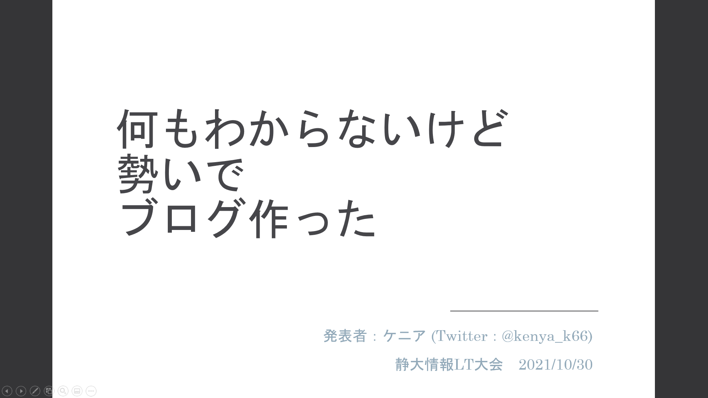

＼(^o^)／
気づいたら一週間以上たってた＼(^o^)／ｵﾜﾀ
実はじわじわと課題と授業がたまってきてたのですが、今週（先週）はそれをひたすら消化していく感じでした。アルゴ式の方もブログを書いてない期間は触れていないです。今回は大学の方を優先させました。その代わり仮免は次の土日になったけど………
アルゴ式の方に学業を優先すると伝えたら優しく対応してくれました。大学の勉強もこなしながら競プロなどに取り組んでる人すごいなぁと改めて思いましたね。今週は祝日があったり少し落ち着いてきた（多分）ので、今後はまた改めて取り組んでいく予定です。ていうかアルゴ式個人的に気に入ってるのでやりたい。なんか色々コンテンツ増えてるし。ただ、問題をもっと解いた方がいいのかもしれないけどそこまでは手が回らないのです。自分はそこまで容量がいい人ではないので……
大学のLT大会に参加した

10月30日に静大情報LTなるものがあったので参加した。授業と関係ないイベントのためにパワポでプレゼンを作ったのは初めてかも……
実際に参加してみて良かったと思っています。ツイキャスがいまいちわからなくて少し慌てましたが、純粋に楽しかったです。他の人の聞いてて面白いプレゼンも聞けたし、自分も趣味の範囲で作ったブログについてプレゼンするという初めての体験を出来てよかったです。今後もいいネタが出来たら積極的に参加したいです。こんなネタでも勇気を出して参加したのは正解でしたね！
icpcに参加することになった
こんなケニアですが、急遽icpcに参加することになりました。人数が足りないというところを友達が誘ってくれました。うれしいですね！チーム名は「lika neko」です（かわいい）。この大会については初めて聞いたのでわからないことが多いですが、自分の可能な限り頑張りたいと思います。実力はまだまだですが、手は抜けないです。
今後もこんな状態が続くかも
課題もどんどん重たくなっていき、授業内容も難しくなっていくため授業以外のことに手を付ける時間が少ない状況が続きそうです。教習所のスケジュールは週までに抑えるつもりえではありますが果たしてどうなることやら……夏休みに購入したはずの大逆転裁判もまだ前半、メトロイドも手が付けられていない……Twitter辞めたらいいのか？（多分そう）あと最近個人的な趣味でもあるドット絵がかけていません。大問題です。
早く後期終われ……